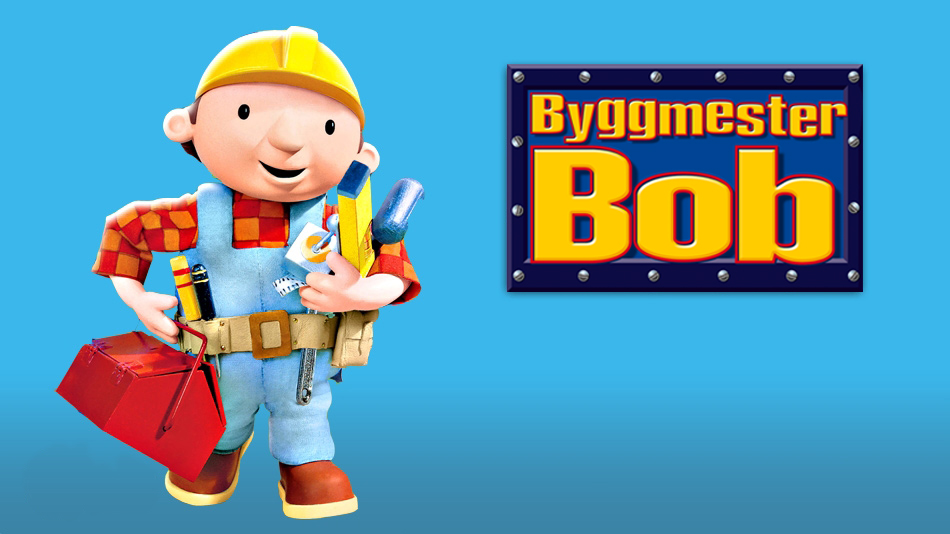
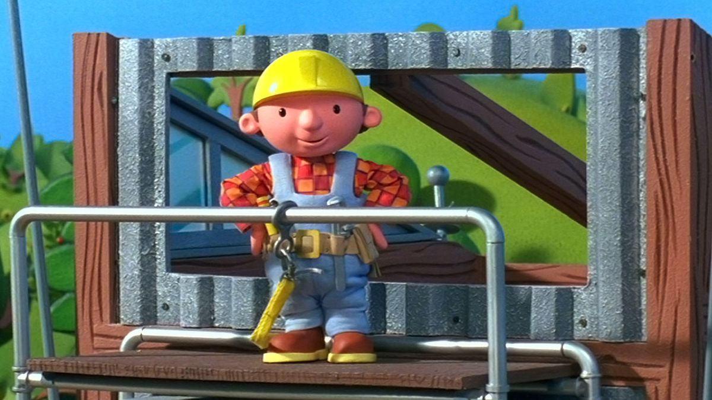

Byggmeistar Bob
Det beste fjernsynsprogrammet nokon gong?
Fyrste gong Byggmeister Bob blei sendt på fjernsynet, var ein sein haustkveld i 1998, og det endra historia. På grunn av sine fengjande songar og sine eigenarta figurar, fann denne serien ein plass i kvar unge sitt hjarte. Serien var nominert til BAFTA-prisen i kategorien «Førskule animasjon» ti år på rad, frå 1999 til 2009, og vann prisen for beste animasjon for ungar i 2003. I over 20 år har Byggmeister Bob og gjengen ikkje berre lært oss om bygging og graving, men også om det å vera godhjarta og positiv.
